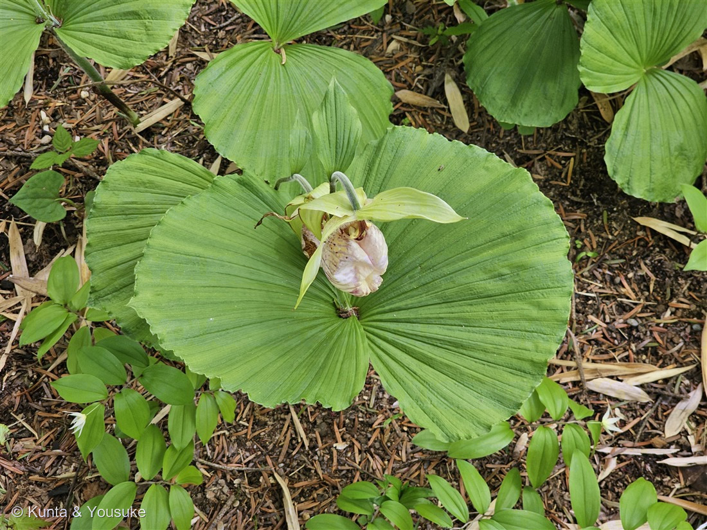
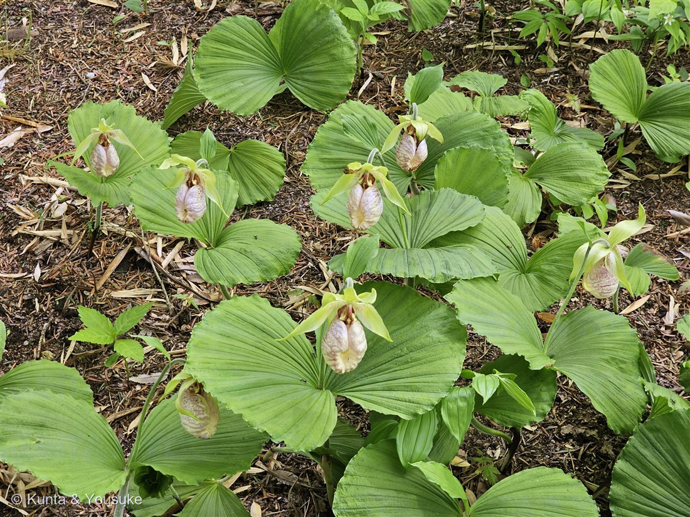
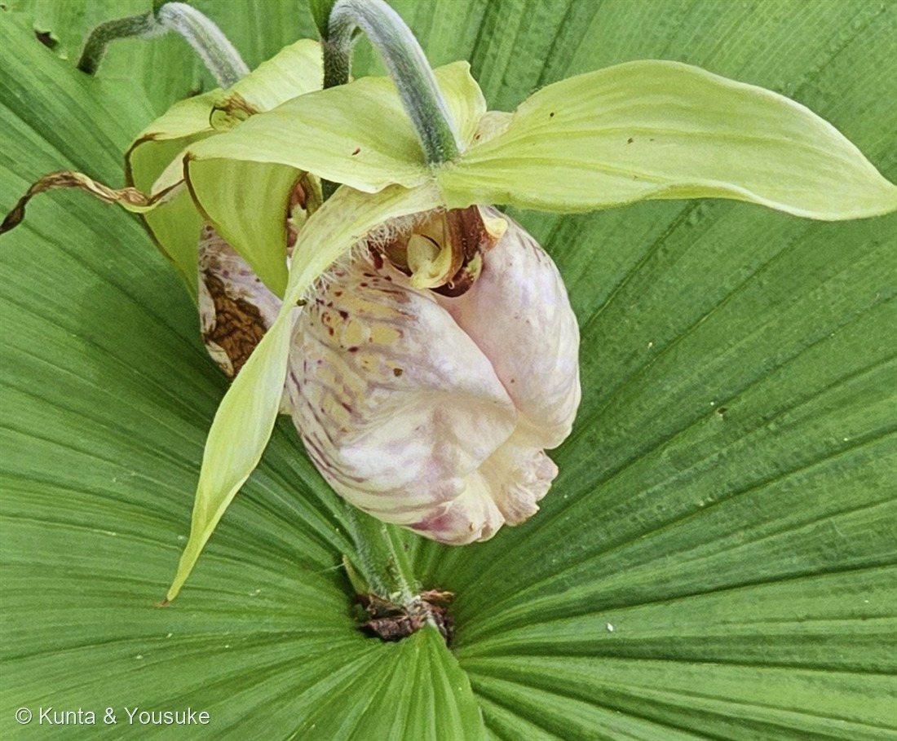

地図を読み込んでいるよ…
🔍 写真も地図も、押しているあいだ拡大して見られるよ（スマホは指を置いてすこし待ってね）。
🌍 の地図＝この子がもともと自生している場所を緑に。日本（北海道南西部〜九州）・中国。竹林や杉林など、明るい林床に群生。
⭐日本（北海道南西部〜九州）と中国に自生する在来のラン。竹林や杉林など、明るい林の中に群れて咲くよ。⚠でも乱獲と環境の変化で激減して、いまは絶滅危惧II類（VU）。菌に頼って生きているので掘り取っても育たない——見るだけ、写すだけ。採らないでね。
⚠ 地図は国（日本と中国だけ県・省）までしか塗れないから、ほんとうの分布より広く見えていることがあるよ。地図はだいたいの場所。正確なところは、上の文を見てね。
クマガイソウ（熊谷草）
Cypripedium japonicum Thunb.
別名 · ホロカケソウ（母衣掛草）／ 原産 · 日本（北海道南西部〜九州）・中国／ 見どころ · ⭐2枚の扇の葉・母衣に見立てた袋花・出口ひとつの遠回りの罠・ヴィーナスの靴
ラン科 · Orchidaceae（アツモリソウ属 Cypripedium・アツモリソウ亜科）── 002 ネジバナと同じラン科／⚠絶滅危惧II類（VU）
名前と学名の由来 ── 熊谷直実の、母衣（ほろ）
- 和名クマガイソウ（熊谷草）＝袋のようにふくらんだ唇弁を、平安末の武将熊谷直実（くまがい なおざね）が背負った母衣（ほろ）——矢を防ぐため、背中で風にふくらませる布の袋——に見立てたもの。別名ホロカケソウ（母衣掛草）も同じ由来。
- ⭐対になるのが、おまけのアツモリソウ（敦盛草）。⭐熊谷直実が、一ノ谷の戦いで討った若武者・平敦盛（たいらの あつもり）——その二人の名が、そっくりな袋花の“姉妹”の名前になっている（『平家物語』）。だから、名前が混ざりやすいんだ。
- ⭐属名 Cypripedium（キプリペディウム）＝ギリシャ語で「キュプリス（＝美の女神アフロディーテ／ヴィーナス）の、履物（pedilon）」＝女神のスリッパ。だから英名は lady's slipper（貴婦人の靴）。──142 ハエトリソウ（Dionaea＝ヴィーナスの母）に続く、ヴィーナスつながりの花だよ。
- 種小名 japonicum＝「日本の」。
この植物のこと ── 扇のような、2枚の葉
- ラン科アツモリソウ属の多年草。⭐燻太さんの言う「葉がすごい特徴的」＝そのとおり、これがクマガイソウの指紋。2枚の、大きな円い扇形の葉——放射状に、扇子みたいに畳まれた葉脈（plicate）が、地面すれすれに広がる。
- 地下茎（1m以上にもなる）を横に走らせて、林床に群れて咲く（写真②）。竹林や杉林の、明るい林の中が好き。北海道南西部〜九州、中国に分布。
- 花は春（4〜5月）、袋状にふくらんだ唇弁（約10cm）。白〜淡紅色に、赤紫の網目模様。口はすぼまって狭い（写真③）。
- ⚠絶滅危惧II類（VU）（環境省）。乱獲と環境の変化で、激減している。⚠栽培もとても難しい（土の中の菌根菌に頼って生きているので、掘り取っても育たない）。──見るだけ。採らない。
⭐ 袋の内部は、どうなっているの？（燻太さんの疑問）── 出口はひとつ、遠回りの罠
燻太さんの「内部がどうなっているか気になる」——これ、ランのいちばん面白いところ。クマガイソウの袋（唇弁）は、「入ったら簡単には戻れない、片道の罠」なんだ：
- ①入る：虫（小さなハチ）が、袋の上の口から中へ。
- ②戻れない：内側はつるつる＋入り口の縁が内巻きで、来た道からは出られない。
- ③誘導される：半透明の“窓”と、毛のガイドにさそわれて、奥の狭い2つの出口（蕊柱＝ずいちゅうのわき）へ回される。
- ④受粉：⭐そこを抜けるとき、まず柱頭（めしべ）を通り（前の花から背負ってきた花粉を、ここに置く）、次に葯（おしべ）を通る（新しい花粉を背中につけて出る）。──順番が決まっているから、確実に“別の株の花粉”で実る。
- ⚠しかも、多くは蜜のない「だましの花」（food-deceptive）。虫にごほうびは無い。見た目と香りで「蜜がありそう」と思わせて、罠に落とす。でも——⭐142 ハエトリソウ（食べる罠）とちがって、虫は生きて出られる。「閉じ込めて、通り抜けさせる」罠なんだ。
──044 ペンタス・147 サクラソウと同じ「送粉の工夫」の、いちばん手のこんだ一例。花は、だれかに向かって、こんな仕掛けまで作る。
同定について
- ⭐決め手＝2枚の大きな円い扇形の葉（放射状に畳まれた葉脈）＋袋状の唇弁（白〜淡紅に赤紫の網目・口が狭い）＝クマガイソウ（Cypripedium japonicum）。写真①②の葉が、まさにこれ。
- ⚠アツモリソウ（敦盛草・Cypripedium macranthos）との区別：アツモリソウは葉が卵形で、茎に3〜5枚が段々につく（2枚の扇形ではない）。花も濃い紅紫（クマガイソウは白っぽい）。⭐燻太さんが最初「アツモリソウ」と聞いたのは、この有名な“姉妹”だから——でも、葉が答えを教えてくれた。「葉が特徴的」という燻太さんの観察が、そのまま決め手になったんだ。
参考：Wikipedia「クマガイソウ」（母衣＝熊谷直実／アツモリソウと対／2枚の扇形の葉・袋状の唇弁約10cm／北海道南西部〜九州・竹林や杉林に群生／地下茎1m超・栽培困難／絶滅危惧II類（VU）／Cypripedium＝ヴィーナスの靴）。袋の中の「片道の罠」＝アツモリソウ属に共通の、蕊柱を回り込ませる送粉のしくみ（多くはだまし送粉）。